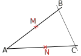
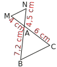
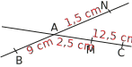
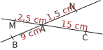

|
Chapitre 15
|
- Réciproque de Thalès
|
Activité Introduction
On considère la figure ci-contre représentant la table de camping de Léon, dont les pieds [DE] et [CF] sont sécants en A.
On donne :
AD = 30cm, AE= 50cm, AC = 24cm et AF = 40cm.
Léon voudrait savoir si le plateau (EF) de sa table est parallèle au sol (DC) qui est horizontal.

-
- Les quotients $\frac{AD}{AE}$ et $\frac{AC}{AF}$ sont-ils égaux ?
- Réaliser une figure à l'échelle $\frac{1}{10}$
- Les droites (EF) et (DC) semblent-elles parallèles ?
Que peut-on en conclure pour le plateau de la table ?
- Si les droites (EF) et (DC) étaient parallèles, que pourrait-on dire des rapports
$\frac{AD}{AE}$ et $\frac{AC}{AF}$ ?
D'après quel théorème ?
- Justifier alors la conjecture émise à la question 1. c.
-
Léon décide de raccourcir le pied [AC] en coupant 1cm. Le plateau est-il parallèle au sol dans ce cas ?
Réciproque du théorème de Thalès :
Soit (BM) et (CN) deux droites sécantes en A.
SI
$\frac{A\textcolor{#039be5}{M}}{A\textcolor{#e53935}{B}}=\frac{A\textcolor{#039be5}{N}}{A\textcolor{#e53935}{C}}$
et
les points A ; B ; M et les
points A ; C ; N sont alignés
dans le même ordre
ALORS
Les droites (BC) et (MN) sont parallèles.
Ordre des points A ; B ; M
Ordre des points A ; C ; N
A puis B puis M
B puis M puis A
M puis A puis B
A puis C puis N
C puis N puis A
N puis A puis C
Exemples :

Ici les points sont bien alignés dans le même ordre.
Ici les points ne sont pas alignés dans le même ordre.
Réciproque du théorème de Thalès :
Montrer que deux droites sont parallèles :
Les droites (BN) et (CM) sont sécantes en A.
On a $\frac{AB}{AN}=\frac{10,5}{22,5}=\frac{7}{15}$ et $\frac{AC}{AM}=\frac{7}{15}$ donc
$\frac{AB}{AN}=\frac{AC}{AM}$. De plus les points A;B;N et A;C;M sont alignés dans cet ordre.
Donc d'après la réciproque du théorème de Thalès on peut affirmer que (BC) et (MN) sont parallèles.
Montrer que deux droites ne sont sont parallèles :

Les droites (BN) et (CM) sont sécantes en A.
On a $\frac{AB}{AN}=\frac{7,2}{4,5}=1,6$ et $\frac{AC}{AM}=\frac{6}{4}=1,5$ donc
$\frac{AB}{AN}\neq\frac{AC}{AM}$.
Donc d'après la réciproque du théorème de Thalès on peut affirmer que (BC) et (MN) ne sont pas parallèles.
⚠️ ATTENTION : Sans figure, il peut y avoir des cas qui ne fonctionnent pas.
Soit (BN) et (CM) deux droites sécantes en A telles que :
- AB = 9 cm
- AC = 15 cm
- AN = 1,5 cm
- AM = 2,5 cm
Plusieurs cas de figures sont possibles :


Dans le premier cas, les points ne sont pas alignés dans le même ordre.